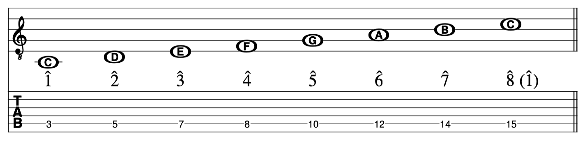
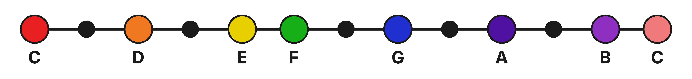
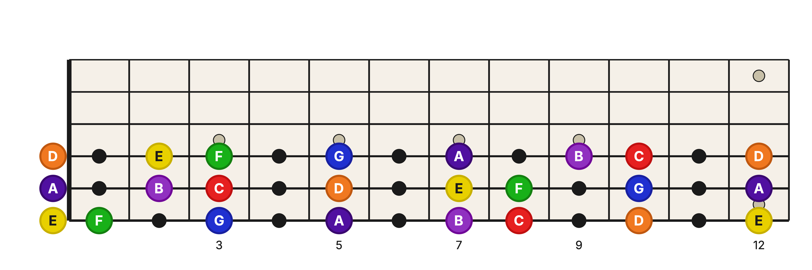
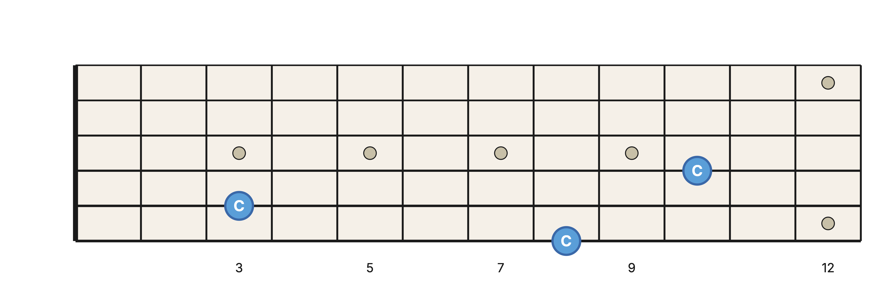
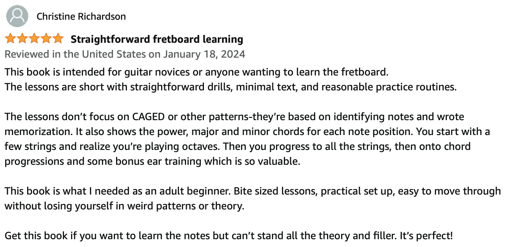
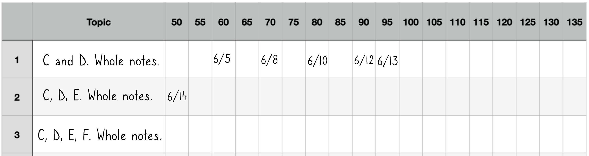
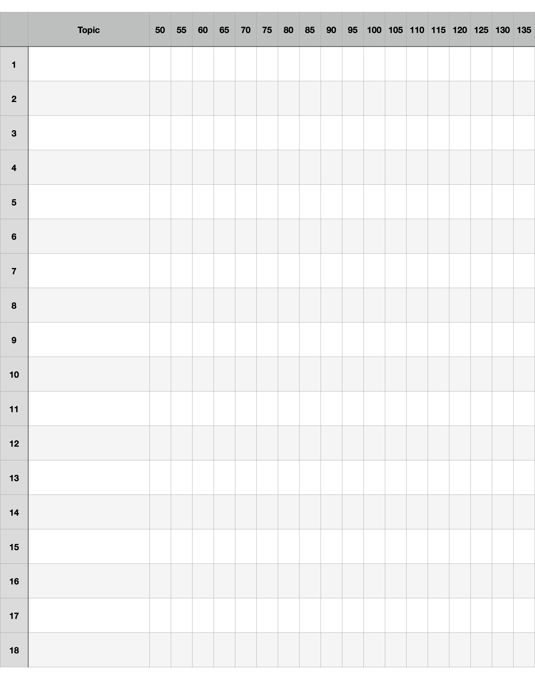

Chapter 12
The Fretboard: Memorizing Note Locations on the E, A, D Strings
The C Major Scale on One String

In this piece of music, I include the scale degrees (the numbers with the carets above them) in between the standard notation and the tab. It’s acceptable to call the last scale degree in the scale 8̂ or 1̂.
Building The Fretboard
In music, notes in a scale continue on in both directions beyond both C’s. So we’re going to take the scale…

…and just extend it just a little bit.

Now I can see E to E. So I’m going to take this string of notes and create the strings on the guitar like so:

Now I’ll place that down as my 6th string. Like so…


And a D string:

I’ll create an A string and a D string as well and altogether it will look like this:

Here are the names of the notes without the colors:

The first step to becoming an intermediate-advanced player is memorizing the note locations on the fretboard.
It seems like a daunting task, I know. But there is a specific strategy that has a 100% success rate. Just do one note at a time.

On your guitar, play the 8th fret (of the low E string) and say/think “C”. Then play the 3rd fret (of the A string) and say/think “C”. Finally, play the 10th fret (of the D string) and say/think “C”. Then go back down to the 3rd fret (of the A string) and start over.
As you hunt for these notes, let the fret markers (the dots) guide your eye instead of counting up from the nut every time. The 3rd fret sits right on a dot, the 8th fret is just past the 7th-fret dot, and the 10th fret is just past the 9th-fret dot. That’s exactly what the dots are for: finding your place quickly.
There are a few reasons why you should learn the bass strings (E, A, D). First, it’s only half of the fretboard and therefore is not as overwhelming as tackling the entire thing. Second, it’s very useful because many guitarists are quite familiar with Power Chord and Barre Chord shapes. Those shapes are built starting from a note on a bass string, and that note is what gives the chord its name. So if you memorize the notes on these strings, you’ll instantly know the name of every chord you play with those shapes.
Here’s one more reason it’s less work than it looks: you only have to learn the first 12 frets. Remember that at the 12th fret, the notes start over as a “lighter shade” of the open string. So once you know a string from its open note up to the 12th fret, you already know the rest of that string. It just repeats. Three strings, twelve frets each, and then it all comes back around.
Guitar Fretboard Mastery by Chris Paul
Chris Paul (co-author of this book) put together a complete memorization guide for mastering the fretboard. You can read the ebook for free at https://slcpl.pressbooks.pub/guitarfretboardmastery. If you wish to support his work, you can buy a copy of the ebook on Amazon.

How to keep track of your note memorization progress
(Quick definitions, in case these are new: a whole note is held for four beats, a half note for two beats, and a quarter note for one beat. We cover rhythm in detail in the Standard Notation section.)
On the next page is a Progress Tracker. In the “Topic” column, write in the specific goal that you are working on. For example, “Notes: C and D. Play as whole notes.” Then under the BPM column, mark the date at which you can successfully play the topic. If you can play all C’s and all D’s (as whole notes) at 50 BPM, then that is where you mark the current date.

Remember that note length and tempo work together: the same actual duration can be written as a longer note at a faster tempo or a shorter note at a slower one. For example, a whole note at 100 BPM lasts exactly as long as a half note at 50 BPM, and a half note at 100 BPM lasts as long as a quarter note at 50 BPM. So as you get faster, you can track the same progress using shorter note values—working from whole notes toward quarter notes.
I recommend that your end goal should be to play all 7 natural notes (as quarter notes) at 80 BPM without any errors.
